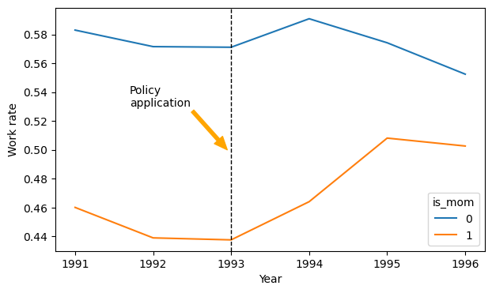

import numpy as np
import pandas as pdImpact of tax credit on single women employment
# pull the data
dataset = pd.read_stata("datasets/eitc.dta")dataset.head()| state | year | urate | children | nonwhite | finc | earn | age | ed | work | unearn | |
|---|---|---|---|---|---|---|---|---|---|---|---|
| 0 | 11.0 | 1991.0 | 7.6 | 0 | 1 | 18714.394273 | 18714.394273 | 26 | 10 | 1 | 0.000000 |
| 1 | 12.0 | 1991.0 | 7.2 | 1 | 0 | 4838.568282 | 471.365639 | 22 | 9 | 1 | 4.367203 |
| 2 | 13.0 | 1991.0 | 6.4 | 2 | 0 | 8178.193833 | 0.000000 | 33 | 11 | 0 | 8.178194 |
| 3 | 14.0 | 1991.0 | 9.1 | 0 | 1 | 9369.570485 | 0.000000 | 43 | 11 | 0 | 9.369570 |
| 4 | 15.0 | 1991.0 | 8.6 | 3 | 1 | 14706.607930 | 14706.607930 | 23 | 7 | 1 | 0.000000 |
Each row is an observation of a single woman.
dataset.shape(13746, 11)# creating the modelling dummy variables
dataset['is_mom'] = np.where(dataset['children'] > 0, 1, 0)
dataset['after93'] = np.where(dataset['year'] > 1993, 1, 0)
dataset['is_mom_after93'] = dataset['is_mom'] * dataset['after93']import matplotlib.pyplot as plt
fig, ax = plt.subplots(figsize=(7,4))
dataset.groupby(['year', 'is_mom'])['work'].mean().unstack().plot(ax=ax)
ax.axvline(1993, color='k', linestyle='--', linewidth=1)
ax.set_xlabel('Year')
ax.set_ylabel('Work rate')
# include a arrow that indicates points from text to the line
ax.annotate('Policy\napplication',
xy=(1992.95, 0.5),
xytext=(1991.7, 0.53),
arrowprops={"width": 3, "headwidth": 10, "color": "orange"});
dataset.head()| state | year | urate | children | nonwhite | finc | earn | age | ed | work | unearn | is_mom | after93 | is_mon_after93 | is_mom_after93 | |
|---|---|---|---|---|---|---|---|---|---|---|---|---|---|---|---|
| 0 | 11.0 | 1991.0 | 7.6 | 0 | 1 | 18714.394273 | 18714.394273 | 26 | 10 | 1 | 0.000000 | 0 | 0 | 0 | 0 |
| 1 | 12.0 | 1991.0 | 7.2 | 1 | 0 | 4838.568282 | 471.365639 | 22 | 9 | 1 | 4.367203 | 1 | 0 | 0 | 0 |
| 2 | 13.0 | 1991.0 | 6.4 | 2 | 0 | 8178.193833 | 0.000000 | 33 | 11 | 0 | 8.178194 | 1 | 0 | 0 | 0 |
| 3 | 14.0 | 1991.0 | 9.1 | 0 | 1 | 9369.570485 | 0.000000 | 43 | 11 | 0 | 9.369570 | 0 | 0 | 0 | 0 |
| 4 | 15.0 | 1991.0 | 8.6 | 3 | 1 | 14706.607930 | 14706.607930 | 23 | 7 | 1 | 0.000000 | 1 | 0 | 0 | 0 |
DiD by aggregation
dataset.groupby(['is_mom', 'after93'])['work'].mean().unstack()| after93 | 0 | 1 |
|---|---|---|
| is_mom | ||
| 0 | 0.575460 | 0.573386 |
| 1 | 0.445962 | 0.490761 |
- work(is mom after 93) - work(is_mom before 93) = 0.49 - 0.45 = 0.4
- work(not mom after 93) - work(not mom before 93) = 0.57 - 0.58 = -0.1
- DiD = 0.4 - (-0.1) = 0.4 + 0.1 = 0.5
- DiD = 0.5
The employmet rate of mom’s that work has increased by 0.5 after the policy application.
DiD by Logistic Regression
X = dataset[['is_mom', 'after93', 'is_mom_after93']]
y = dataset['work'].valuesimport statsmodels.api as sm
X = sm.add_constant(X)
model1 = sm.Logit(y, X).fit()Optimization terminated successfully.
Current function value: 0.686491
Iterations 4print(model1.summary()) Logit Regression Results
==============================================================================
Dep. Variable: y No. Observations: 13746
Model: Logit Df Residuals: 13742
Method: MLE Df Model: 3
Date: Wed, 28 Dec 2022 Pseudo R-squ.: 0.009118
Time: 20:39:39 Log-Likelihood: -9436.5
converged: True LL-Null: -9523.3
Covariance Type: nonrobust LLR p-value: 2.058e-37
==================================================================================
coef std err z P>|z| [0.025 0.975]
----------------------------------------------------------------------------------
const 0.3042 0.036 8.443 0.000 0.234 0.375
is_mom -0.5212 0.047 -10.985 0.000 -0.614 -0.428
after93 -0.0085 0.053 -0.161 0.872 -0.112 0.095
is_mom_after93 0.1885 0.070 2.708 0.007 0.052 0.325
==================================================================================It is not the same because it is a Logistic Regression!